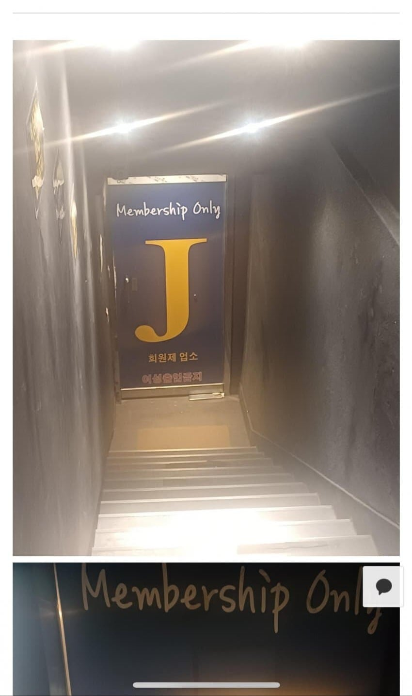
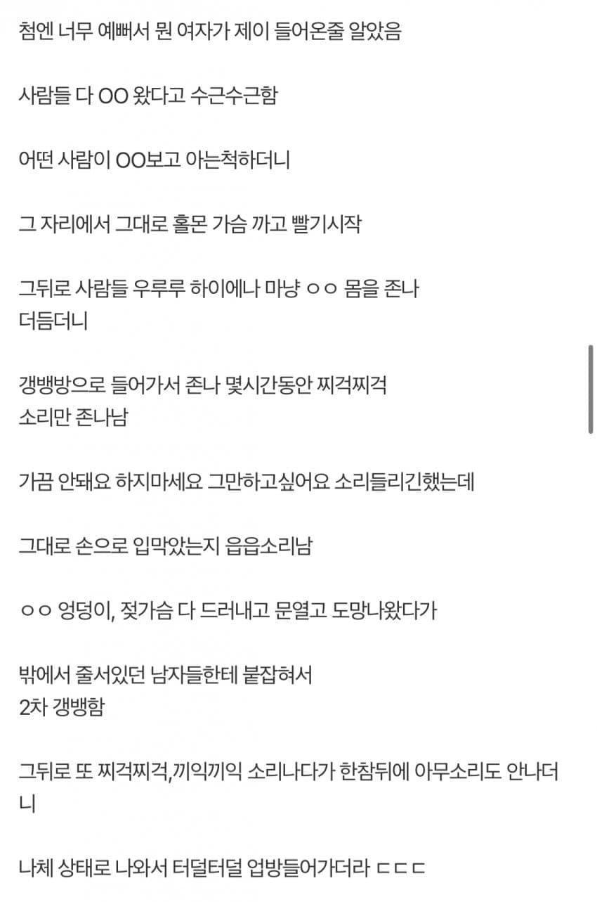

213 · 6 · 12 시간 전 · 원문


수집 당시 댓글 6개
고객님맞을래요 · 29 분 전
시발놈들
예압 · 26 분 전
현실이라고?
그릇째뚝딱 · 25 분 전
그래서 저기가 어디임
↳ 답글 · 익명
구글링하면 바로뜬다
↳ 답글 · 그릇째뚝딱 · 19 분 전
??? 하는건 암흑의짓인데 굉장히 공용으로 정보 확인이 가능 하구나
17세여고생 · 9 분 전
와
시발놈들